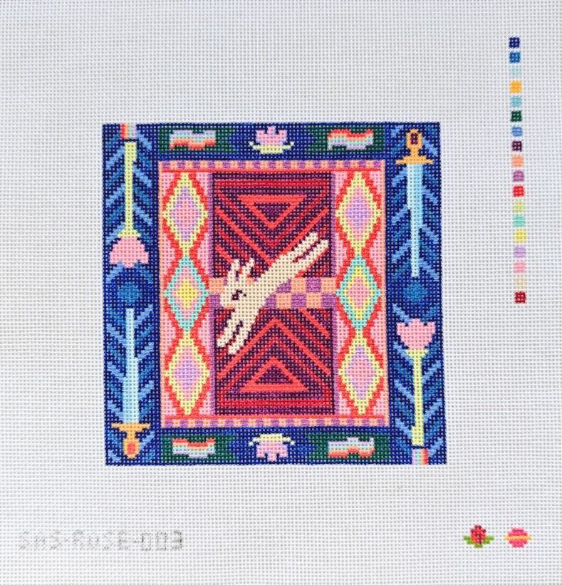
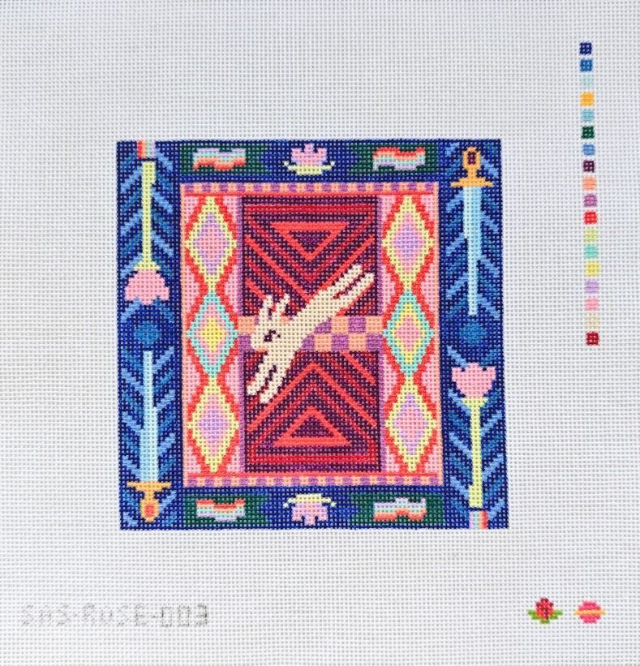

I have been a needlepoint designer with Saturnalia Stitching since 2025, and a DIY needlepointer for a few years before that. Here are a few of my favorite Saturnalia designs:


 


A catalog of all my released Saturnalia designs can be found at the bottom of this page!
I hugely encourage anyone who is curious about needlepoint to try out making their own canvases with digital charts! There are many sources of charts - both for free and for purchase - online. I have a few designs that are are available as official charts:

Available for $5 from Saturnalia. 5x7 inches on 13 mesh. This one is arevamp of a design originally from 2023, one of my first ever projects and still one of my favorite designs.

Available for $10 from Saturnalia. 8x8 inches on 13 mesh. A nice medium-sized project with relaxing big areas to fill in. Easy and forgiving to freehand if you don't feel like counting the stitches!

Free from Saturnalia, along with the rest of Abbey's free series of "tiny" canvases. One square inch on 18 mesh, can be bigger on 13 mesh and can also be given a little circle border. Makes a nice bag charm.

Free chart of the star of one of my favorite games of all time, Hollow Knight: Silksong. Hornet is a true icon and legend. About 5x4 on 13 mesh. Makes a nice chunky ornament!

Three free double sided charts. 2x3 or 3x3 inches on 18 mesh.

Another favorite game of all time. Feel free to customize the color or adapt your own favorite GBC start screen or screenshot, and I would LOVE to see it if you do!
If there is a design or illustration of mine that isn't here which you'd like to paint/adapt into a needlepoint canvas yourself (for personal use only) instead of buying a pre-painted canvas, for most of my work I am happy to sell a virtual "ticket" for you to do this even if a chart is not officially available. You can send me a tip on ko-fi for $5-10 per design if you want to do this.
There are a huge number of resources for getting started with DIY needlepoint, but I thought I would list a few places I like to get charts.
I started needlepoint in the summer of 2023 after spending time with my cousin Meghan, who works at a needlepoint store in Florida. I had never seen needlepoint before, but she did some stitching while visiting (of course), and it looked very fun and relaxing. She encouraged me to use some of my drawings as needlepoint designs.


My first ever needlepoint item.
I didn't map out my designs all that much before stitching them; I would sketch roughly on canvas with paint markers, and then figure out the exact stitching as I went.

I connected with Abbey of Saturnalia a little while after I started needlepointing, and through dedication on her part, I finally got my act together to publish some designs with her in spring/summer 2025. (Thank you for hunting me down, Abbey! Eternally grateful!) I have been an enthusiastic member of the Saturnalia design collective ("solar system") ever since.
Even though I have fun stitching my professional designs now that they exist, I do my best to stay true to my DIY roots and also work on free-form projects that are roughly sketched on canvas.
Every canvas I have released for sale with Saturnalia, listed in reverse chronological order. You can see which of these are in stock on the Saturnalia Stitching website.